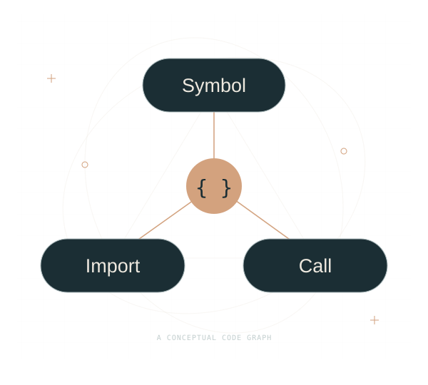

DEVELOPER TOOLING / SQLITE CODE GRAPH
Local
developerplatform.
Repository structure,
ready to query.
A persistent SQLite code graph for navigating symbols, imports, and calls. The public MIT release contains the repository graph component; the larger local agent platform remains separate.
View public graph component
- CONTEXT
- Independent, AI-assisted prototype
- FOCUS
- Public repository graph component
- STORAGE
- Persistent SQLite index
- EVIDENCE
- 63 standalone tests passed
From source filesto structure.
Finding a name in a repository is one task. Understanding what defines it, imports it, or calls it is another. This prototype records those relationships in a persistent code graph.
Its navigation surface includes repository maps, file outlines, search, dependency and dependent queries, and heuristic test discovery. The aim is targeted inspection of repository structure.
The public artifact is a standalone graph component, with synthetic examples and scoped verification.
An index withconnections.
The graph makes several repository-navigation operations available through targeted queries.
REPRESENT THE REPOSITORY
Index symbols and relationships.
Record symbols, imports, and call relationships in SQLite. Repository maps and file outlines expose the structure at different levels of detail.
MAINTAIN THE GRAPH
Build and update the index.
Support index creation and incremental updates so navigation can reflect changes to repository files.
FOLLOW THE CONNECTIONS
Query dependencies and tests.
Search the graph, navigate dependencies and dependents, and use heuristic test discovery to identify potentially relevant tests.
CONTROL WHAT ENTERS THE INDEX
Apply filtering before storage.
The local developer platform uses policy rules to exclude content and checks for material that may be sensitive. Privacy and security still need to be assessed for the tool as a whole.
Component evidence.Specific scope.
The standalone sqlite-codegraph release passed 63 local tests: 56 adapted from the existing graph suite and 7 new tests. Its synthetic repository demo also passed.
These checks cover the extracted graph component. The larger agent workflow, model inference, security guarantees, and performance were outside validation.
- Result
- 63 standalone tests passed
- Suite
- 56 adapted existing tests + 7 new tests
- Demo
- Synthetic repository demo passed
- GitHub CI
- Python 3.11 / 3.12 / 3.14 passed ↗
- License
- MIT · published graph component
Verification applies to the standalone extract. It does not validate the complete local agent platform.
An independent, AI-assisted implementation. The MIT license applies to the published graph component only. The full private platform, real repository content and indexes, operational policies, machine and model configuration, and employer material are excluded from the release.